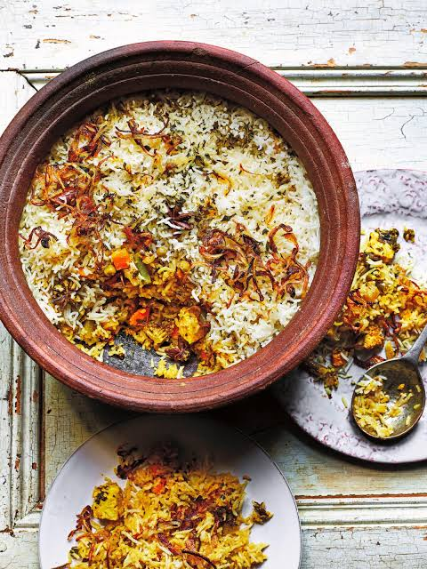

Paneer Dum Biryani

Description
Paneer Dum Biryani is a delicious Indian rice dish made
with aromatic basmati rice, soft paneer cubes, fresh herbs,
yogurt and traditional Indian spices.
The paneer is marinated in a rich mixture of spices and
yogurt, then layered with partially cooked basmati rice.
Everything is slow-cooked using the dum method to create
a wonderful aroma and flavour.
Ingredients
For the Rice
- 2 cups basmati rice
- 4 cups water
- 2 bay leaves
- 3 green cardamom pods
- 1 cinnamon stick
- 4 cloves
- Salt to taste
For the Paneer Marinade
- 250g paneer cubes
- 1/2 cup thick yogurt
- 1 tablespoon ginger garlic paste
- 1 teaspoon red chilli powder
- 1/2 teaspoon turmeric powder
- 1 teaspoon garam masala
- 1 teaspoon biryani masala
- 1 tablespoon lemon juice
- Salt to taste
For Biryani Layers
- 2 large onions, thinly sliced
- 2 tomatoes, chopped
- 2 green chillies
- Fresh mint leaves
- Fresh coriander leaves
- 2 tablespoons ghee
- 2 tablespoons cooking oil
- A pinch of saffron soaked in warm milk
- Fried onions for garnish
Steps
-
Wash the basmati rice thoroughly and soak it
in water for 30 minutes.
-
Mix yogurt, ginger garlic paste, chilli powder,
turmeric, garam masala, biryani masala, lemon juice
and salt in a bowl.
-
Add paneer cubes to the marinade and gently mix.
Let it rest for 20 to 30 minutes.
-
Boil water with bay leaves, cardamom, cinnamon,
cloves and salt.
-
Add the soaked rice and cook until it is about
70 percent done. Drain the water.
-
Heat oil in a pan and fry the sliced onions
until golden brown.
-
Add tomatoes and green chillies. Cook until
the tomatoes become soft.
-
Add the marinated paneer and cook gently
until the masala is cooked and the paneer is heated through.
-
In a heavy-bottomed pot, spread the paneer masala
as the first layer.
-
Add the partially cooked rice over the paneer.
Sprinkle mint, coriander, fried onions and saffron milk.
-
Add ghee, cover the pot tightly and cook on
low heat for approximately 15 to 20 minutes.
-
Turn off the heat and let the biryani rest
for 10 minutes before opening.
-
Gently mix the layers and serve hot with
onion raita.
Serving Suggestions
- Onion raita
- Mirchi ka salan
- Fresh lemon slices
Home